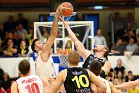

A kosárlabda egy izgalmas csapatjáték, szabályai viszonylag egyszerűek, eszközigénye pedig igen csekély,ha a pálya rendelkezésre áll. Két ötfős csapat játssza, az nyer, amelyik a játékidő alatt több pontot szerez úgy, hogy a labdát bejuttatja az ellenfél kosarába. A kosarakat a föld fölött 10 láb (305 centiméter) magasan, palánkon helyezik el. A pálya négyszögletes, középen felezővonallal kettéválasztott. Ha a támadó csapat a felezővonal mögött hozza játékba a labdát, 8 (az NBA-ben 10) másodperce van átjutni a vonalon. Ha nem sikerül,a védekező csapatnál a labda. Ha a támadók egyszer átjutottak a felezővonalon,nem hátrálhatnak vissza mögé, különben elveszítik a labdát.
